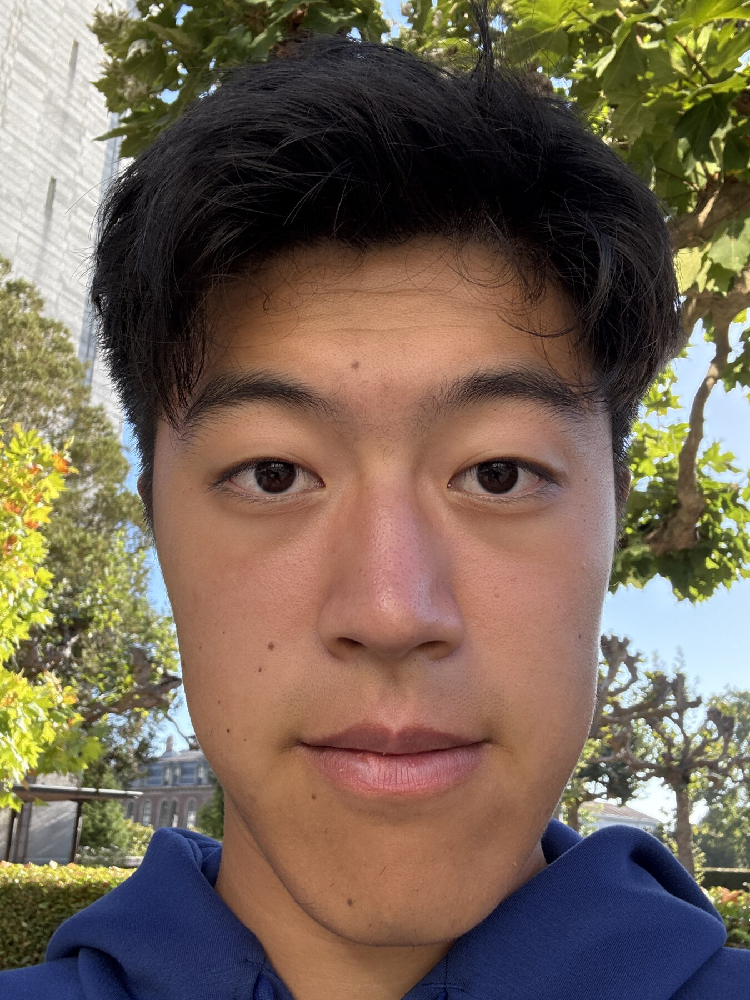
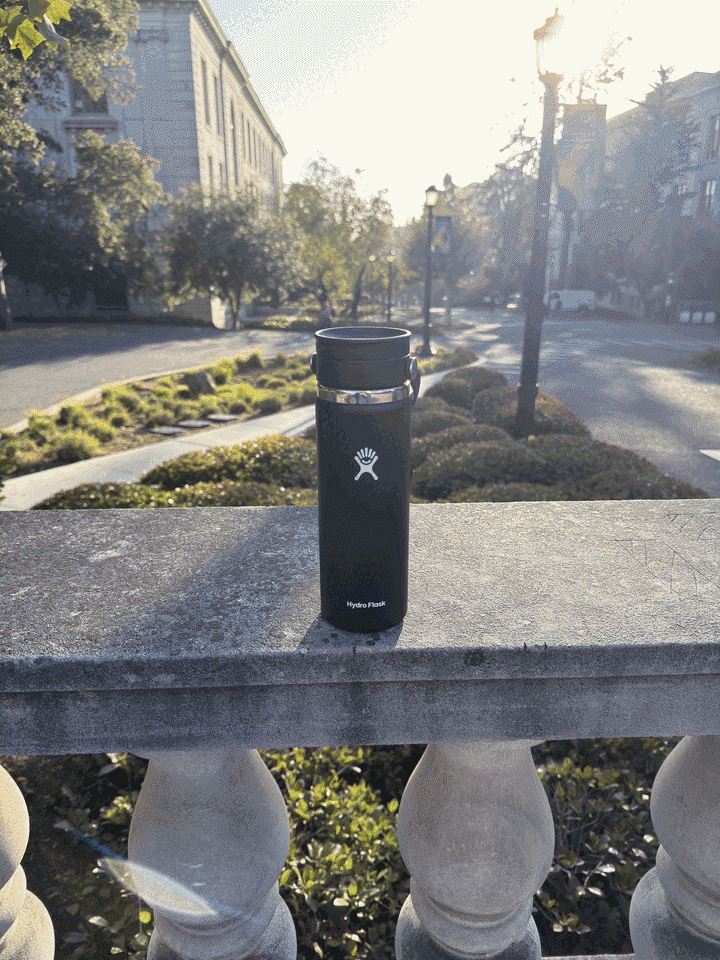

proj0: Becoming Friends with Your Camera
Kevin Chu
Part 1: Selfie
Close up

Farther away and zoomed in
The close-up photo makes my nose look bigger because it is much closer to the camera than the rest of my face. In the second photo, I stepped back and zoomed in to keep my face about the same size. It looks less distorted because the camera is farther away.
Part 2: Architectural Perspective Compression
Farther away and zoomed in

Closer and not zoomed in

The zoomed-in photo looks flatter because the different parts of the building are relatively similar distances from the camera. When I moved closer, the depth and the angle of the building became more noticeable.
Part 3: Dolly Zoom
Water bottle dolly zoom (12 photos).

I moved backward while zooming in and tried to keep the water bottle in the same place. The background changes size and looks like it is moving behind it.